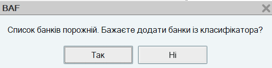
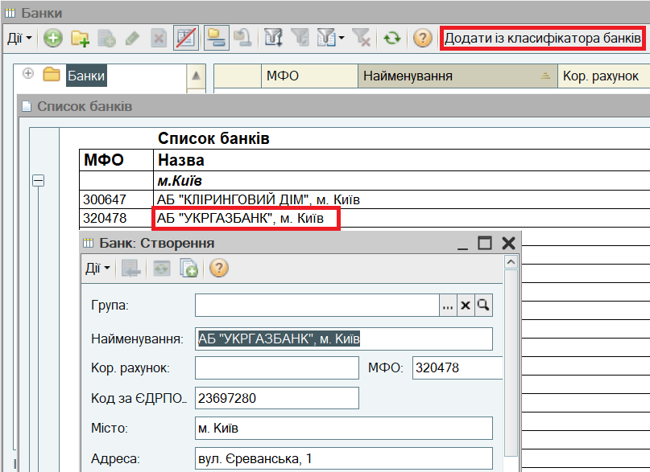
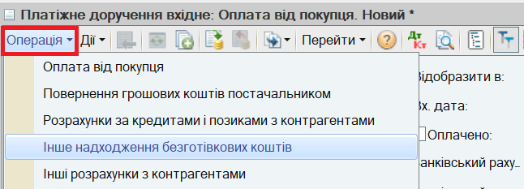
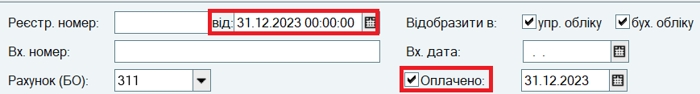
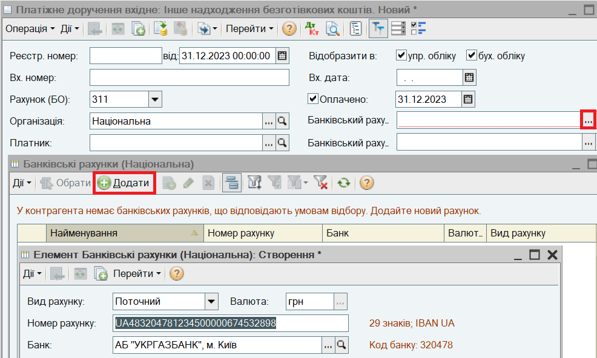
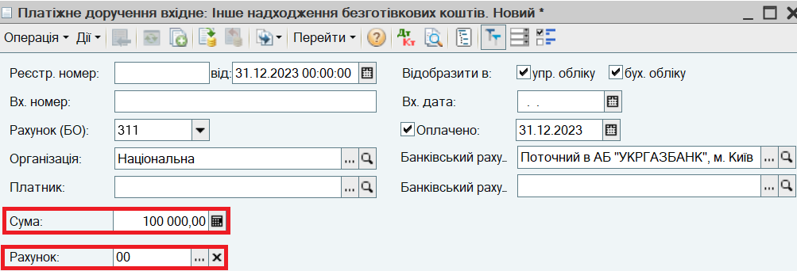

або клавішу INS або виберіть пункт меню Дії — Додати в командній панелі форми списку.
або клавішу INS або виберіть пункт меню Дії — Додати в командній панелі форми списку.Інформація про залишки грошових коштів вводиться для кожного банківського рахунку підприємства.
1. Заповніть список банків, в яких у підприємства відкриті рахунки. Для цього в меню Довідники виберіть пункт Класифікатори і підпункт Банки. Буде видано наступне повідомлення:

Натисніть на кнопку ТАК.

Збережіть банк за кнопкою ОК.
3. Відкрийте список документів Платіжні доручення (вхідні). Для цього в меню Документи виберіть пункт Грошові кошти - Банк - Платіжні доручення вхідні.
4. Відкрийте форму нового документа для введення залишків коштів на банківському рахунку. Для цього натисніть кнопку або клавішу INS або виберіть пункт меню Дії — Додати в командній панелі форми списку.
5. В діалоговому вікні форми документа натисніть на кнопку Операція и выберіть вид операції Інше надходження безготівкових коштів.

6. Заповніть дату документа. Залишки зазвичай вводяться датою, що передує даті початку роботи в інформаційній базі. Встановіть відмітку Оплачено. Перевірте, що дата оплати співпадає з датою документа.

7. Додайте новий банківський рахунок в список банківських рахунків організації. Для цього в полі Банківський рахунок організації документа натисніть на кнопку вибору  , відкриється список Банківські рахунки. Додайте новий рахунок натисканням кнопки Додати (або натисніть клавішу Insert або виберіть пункт меню Дії - Додати). Заповніть Номер рахунку:
, відкриється список Банківські рахунки. Додайте новий рахунок натисканням кнопки Додати (або натисніть клавішу Insert або виберіть пункт меню Дії - Додати). Заповніть Номер рахунку:

Натисніть кнопку ОК для збереження банківського рахунку.
8. Зазначте Суму залишків коштів на банківському рахунку в валюті рахунку. Зазначте кореспондуючий Рахунок 00.
